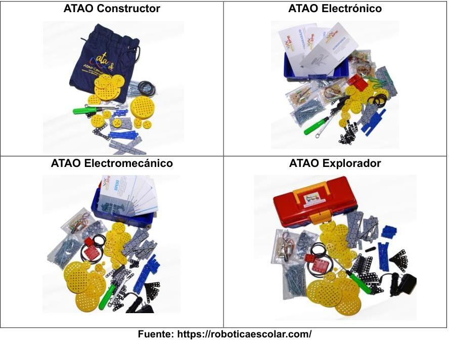
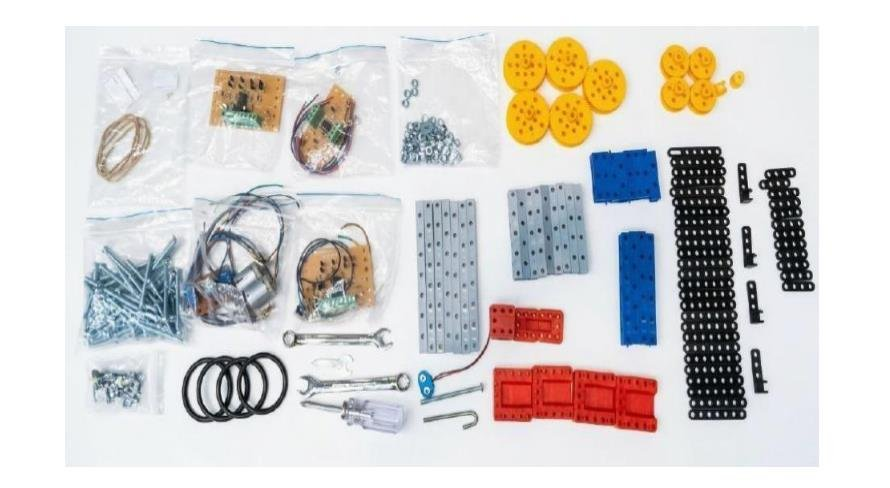
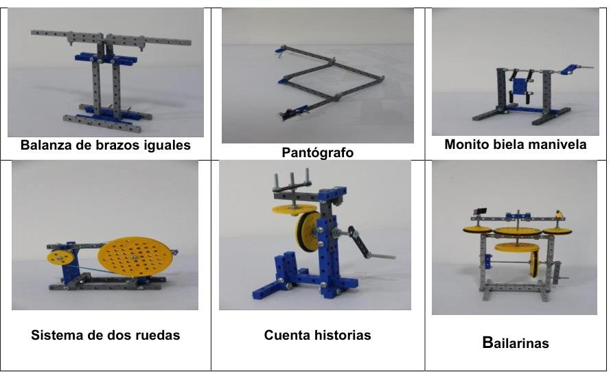
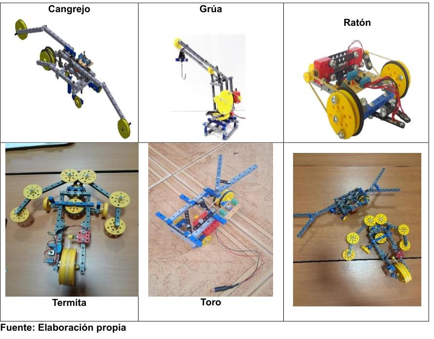
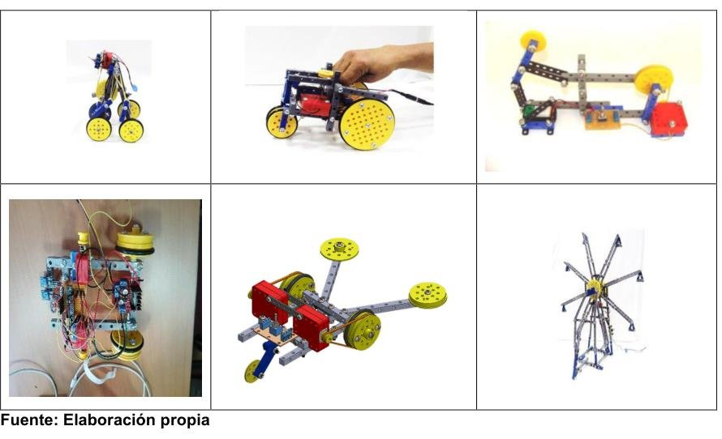
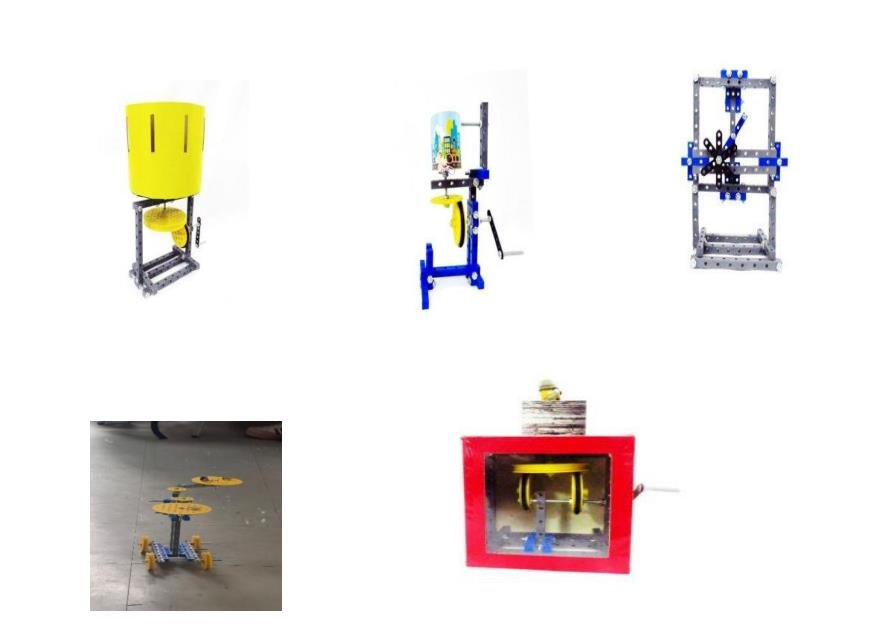

Pasar de la exploración mecánica a la electrónica y la programación.
Los kits ATA EPE son el fruto de más de cuatro décadas de trabajo pedagógico, investigación aplicada y uso en colegios. Traen vigas, pletinas, ruedas, tornillos y tuercas para armar prototipos, junto con fichas y guías de ensamble. Con ellos, niñas y niños desde los 10 años aprenden a leer planos, usar herramientas y representar volúmenes, y sobre todo ganan confianza en sí mismos y aprenden a trabajar en colectivo.
Los ATAOs
- ATAO ConstructorVigas, pletinas, ruedas, tornillos y herramienta para armar mecanismos y autómatas.
- ATAO ElectrónicoSuma tarjetas, cables y fichas para trabajar con circuitos.
- ATAO ElectromecánicoCon motores y tarjetas para los robots que reaccionan a su entorno.
- ATAO ExploradorEn caja, con motores, tarjetas, fuente y piezas de todos los tipos.

Kit ATAO Arduino
Fortalece la creatividad, el pensamiento lógico, la interpretación de planos y la construcción de prototipos, y abre la puerta a la electrónica y la programación. Incluye el kit de exploración, fichas y piezas adicionales, material eléctrico para trabajar con Arduino, guías de ensamble y elementos de apoyo (100 unidades).

Qué se puede construir
Prototipos mecánicos. La balanza de brazos iguales, el pantógrafo, el monito biela-manivela, el sistema de dos ruedas, el cuenta historias y las bailarinas. Los siete prototipos de la cartilla puedes verlos en 3D y en tu mesa.

Robots electromecánicos. Interactúan con su entorno: el cangrejo camina sobre una mesa sin caerse, porque al llegar al borde se detiene y retrocede en otra dirección; el ratón va «pegado» al guardaescobas; la termita sale de un laberinto y el toro esquiva obstáculos. También está la grúa.

Prototipos eléctricos. Circuitos que generan, transportan y usan la energía eléctrica, el camino hacia los sistemas de control y automáticos.

Y sobre todo, lo que cada quien invente: niños, jóvenes y adultos han creado mecanismos, autómatas y máquinas para cualquier cosa. Mira y comparte diseños en la galería.

Cómo conseguirlos
- Responsables
- Andrés Mayorga Jiménez · andres.mayorga@epe.edu.co
Rosa Inés Pedreros Martínez · rosa.pedreros@epe.edu.co - Correo
- robotica@epe.edu.co
- Oficina
- 340 9675 · 269 5658
- Dirección
- Transversal 29 No. 38-27, Bogotá D.C.
- Web
- roboticaescolar.com
- YouTube
- Robótica Escolar EPE